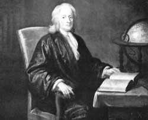

|
|
2 ISAAC NEWTON 1642-1727
Alam dan hukum alam tersembunyi di
balik malam.
Tuhan berkata, biarlah Newton ada! Dan semuanya akan
terang benderang.

Isaac Newton, ilmuwan paling besar dan paling berpengaruh
yang pernah hidup di dunia, lahir di Woolsthrope, Inggris,
tepat pada hari Natal tahun 1642, bertepatan tahun dengan
wafatnya Galileo. Seperti halnya Nabi Muhammad, dia lahir
sesudah ayahnya meninggal. Di masa bocah dia sudah
menunjukkan kecakapan yang nyata di bidang mekanika dan
teramat cekatan menggunakan tangannya. Meskipun anak dengan
otak cemerlang, di sekolah tampaknya ogah-ogahan dan tidak
banyak menarik perhatian. Tatkala menginjak akil baliq,
ibunya mengeluarkannya dari sekolah dengan harapan anaknya
bisa jadi petani yang baik. Untungnya sang ibu bisa dibujuk,
bahwa bakat utamanya tidak terletak di situ. Pada umurnya
delapan belas dia masuk Universitas Cambridge. Di sinilah
Newton secara kilat menyerap apa yang kemudian terkenal
dengan ilmu pengetahuan dan matematika dan dengan cepat pula
mulai melakukan penyelidikan sendiri. Antara usia dua puluh
satu dan dua puluh tujuh tahun dia sudah meletakkan
dasar-dasar teori ilmu pengetahuan yang pada gilirannya
kemudian mengubah dunia.
Pertengahan abad ke-17 adalah periode pembenihan ilmu
pengetahuan. Penemuan teropong bintang dekat permulaan abad
itu telah merombak seluruh pendapat mengenai ilmu
perbintangan. Filosof Inggris Francis Bacon dan Filosof
Perancis Rene Descartes kedua-duanya berseru kepada ilmuwan
seluruh Eropa agar tidak lagi menyandarkan diri pada
kekuasaan Aristoteles, melainkan melakukan percobaan dan
penelitian atas dasar titik tolak dan keperluan sendiri. Apa
yang dikemukakan oleh Bacon dan Descartes, sudah
dipraktekkan oleh si hebat Galileo. Penggunaan teropong
bintang, penemuan baru untuk penelitian astronomi oleh
Newton telah merevolusionerkan penyelidikan bidang itu, dan
yang dilakukannya di sektor mekanika telah menghasilkan apa
yang kini terkenal dengan sebutan "Hukum gerak Newton" yang
pertama.
Ilmuwan besar lain, seperti William Harvey, penemu ihwal
peredaran darah dan Johannes Kepler penemu tata gerak
planit-planit di seputar matahari, mempersembahkan informasi
yang sangat mendasar bagi kalangan cendikiawan. Walau
begitu, ilmu pengetahuan murni masih merupakan kegemaran
para intelektual, dan masih belum dapat dibuktikan --apabila
digunakan dalam teknologi-- bahwa ilmu pengetahuan dapat
mengubah pola dasar kehidupan manusia sebagaimana diramalkan
oleh Francis Bacon.
Walaupun Copernicus dan Galileo sudah menyepak ke pinggir
beberapa anggapan ngelantur tentang pengetahuan purba dan
telah menyuguhkan pengertian yang lebih genah mengenai alam
semesta, namun tak ada satu pokok pikiran pun yang
terumuskan dengan seksama yang mampu membelokkan tumpukan
pengertian yang gurem dan tak berdasar seraya menyusunnya
dalam suatu teori yang memungkinkan berkembangnya
ramalan-ramalan yang lebih ilmiah. Tak lain dari Isaac
Newton-lah orangnya yang sanggup menyuguhkan kumpulan teori
yang terangkum rapi dan meletakkan batu pertama ilmu
pengetahuan modern yang kini arusnya jadi anutan orang.
Newton sendiri agak ogah-ogahan menerbitkan dan
mengumumkan penemuan-penemuannya. Gagasan dasar sudah
disusunnya jauh sebelum tahun 1669 tetapi banyak
teori-teorinya baru diketahui publik bertahun-tahun
sesudahnya. Penerbitan pertama penemuannya adalah menyangkut
penjungkir-balikan anggapan lama tentang hal-ihwal cahaya.
Dalam serentetan percobaan yang seksama, Newton menemukan
fakta bahwa apa yang lazim disebut orang "cahaya putih"
sebenarnya tak lain dari campuran semua warna yang
terkandung dalam pelangi. Dan ia pun dengan sangat hati-hati
melakukan analisa tentang akibat-akibat hukum pemantulan dan
pembiasan cahaya. Berpegang pada hukum ini dia --pada tahun
1668-- merancang dan sekaligus membangun teropong refleksi
pertama, model teropong yang dipergunakan oleh sebagian
terbesar penyelidik bintang-kemintang saat ini. Penemuan
ini, berbarengan dengan hasil-hasil yang diperolehnya di
bidang percobaan optik yang sudah diperagakannya,
dipersembahkan olehnya kepada lembaga peneliti kerajaan
Inggris tatkala ia berumur dua puluh sembilan tahun.
Keberhasilan Newton di bidang optik saja mungkin sudah
memadai untuk mendudukkan Newton pada urutan daftar buku
ini. Sementara itu masih ada penemuan-penemuan yang kurang
penting di bidang matematika murni dan di bidang mekanika.
Persembahan terbesarnya di bidang matematika adalah
penemuannya tentang "kalkulus integral" yang mungkin
dipecahkannya tatkala ia berumur dua puluh tiga atau dua
puluh empat tahun. Penemuan ini merupakan hasil karya
terpenting di bidang matematika modern. Bukan semata
bagaikan benih yang daripadanya tumbuh teori matematika
modern, tetapi juga perabot tak terelakkan yang tanpa
penemuannya itu kemajuan pengetahuan modern yang datang
menyusul merupakan hal yang mustahil. Biarpun Newton tidak
berbuat sesuatu apapun lagi, penemuan "kalkulus
integral"-nya saja sudah memadai untuk menuntunnya ke tangga
tinggi dalam daftar urutan buku ini.
Tetapi penemuan-penemuan Newton yang terpenting adalah di
bidang mekanika, pengetahuan sekitar bergeraknya sesuatu
benda. Galileo merupakan penemu pertama hukum yang
melukiskan gerak sesuatu obyek apabila tidak dipengaruhi
oleh kekuatan luar. Tentu saja pada dasarnya semua obyek
dipengaruhi oleh kekuatan luar dan persoalan yang paling
penting dalam ihwal mekanik adalah bagaimana obyek bergerak
dalam keadaan itu. Masalah ini dipecahkan oleh Newton dalam
hukum geraknya yang kedua dan termasyhur dan dapat dianggap
sebagai hukum fisika klasik yang paling utama. Hukum kedua
(secara matcmatik dijabarkan dcngan persamaan F = m.a)
menetapkan bahwa akselerasi obyek adalah sama dengan gaya
netto dibagi massa benda. Terhadap kedua hukum itu Newton
menambah hukum ketiganya yang masyhur tentang gerak
(menegaskan bahwa pada tiap aksi, misalnya kekuatan fisik,
terdapat reaksi yang sama dengan yang bertentangan) serta
yang paling termasyhur penemuannya tentang kaidah ilmiah
hukum gaya berat universal. Keempat perangkat hukum ini,
jika digabungkan, akan membentuk suatu kesatuan sistem yang
berlaku buat seluruh makro sistem mekanika, mulai dari
pergoyangan pendulum hingga gerak planit-planit dalam
orbitnya mengelilingi matahari yang dapat diawasi dan
gerak-geriknya dapat diramalkan. Newton tidak cuma
menetapkan hukum-hukum mekanika, tetapi dia sendiri juga
menggunakan alat kalkulus matematik, dan menunjukkan bahwa
rumus-rumus fundamental ini dapat dipergunakan bagi
pemecahan problem.
Hukum Newton dapat dan sudah dipergunakan dalam skala
luas bidang ilmiah serta bidang perancangan pelbagai
peralatan teknis. Dalam masa hidupnya, pemraktekan yang
paling dramatis adalah di bidang astronomi. Di sektor ini
pun Newton berdiri paling depan. Tahun 1678 Newton
menerbitkan buku karyanya yang masyhur Prinsip-prinsip
matematika mengenai filsafat alamiah (biasanya diringkas
Principia saja). Dalam buku itu Newton mengemukakan teorinya
tentang hukum gaya berat dan tentang hukum gerak. Dia
menunjukkan bagaimana hukum-hukum itu dapat dipergunakan
untuk memperkirakan secara tepat gerakan-gerakan
planit-planit seputar sang matahari. Persoalan utama
gerak-gerik astronomi adalah bagaimana memperkirakan posisi
yang tepat dan gerakan bintang-kemintang serta
planit-planit, dengan demikian terpecahkan sepenuhnya oleh
Newton hanya dengan sekali sambar. Atas karya-karyanya itu
Newton sering dianggap seorang astronom terbesar dari semua
yang terbesar.
Apa penilaian kita terhadap arti penting keilmiahan
Newton? Apabila kita buka-buka indeks ensiklopedia ilmu
pengetahuan, kita akan jumpai ihwal menyangkut Newton
beserta hukum-hukum dan penemuan-penemuannya dua atau tiga
kali lebih banyak jumlahnya dibanding ihwal ilmuwan yang
manapun juga. Kata cendikiawan besar Leibniz yang sama
sekali tidak dekat dengan Newton bahkan pernah terlibat
dalam suatu pertengkaran sengit: "Dari semua hal yang
menyangkut matematika dari mulai dunia berkembang hingga
adanya Newton, orang itulah yang memberikan sumbangan
terbaik." Juga pujian diberikan oleh sarjana besar Perancis,
Laplace: "Buku Principia Newton berada jauh di atas semua
produk manusia genius yang ada di dunia." Dan Langrange
sering menyatakan bahwa Newton adalah genius terbesar yang
pernah hidup. Sedangkan Ernst Mach dalam tulisannya di tahun
1901 berkata, "Semua masalah matematika yang sudah
terpecahkan sejak masa hidupnya merupakan dasar perkembangan
mekanika berdasar atas hukum-hukum Newton." Ini mungkin
merupakan penemuan besar Newton yang paling ruwet: dia
menemukan wadah pemisahan antara fakta dan hukum, mampu
melukiskan beberapa keajaiban namun tidak banyak menolong
untuk melakukan dugaan-dugaan; dia mewariskan kepada kita
rangkaian kesatuan hukum-hukum yang mampu dipergunakan buat
permasalahan fisika dalam ruang lingkup rahasia yang teramat
luas dan mengandung kemungkinan untuk melakukan
dugaan-dugaan yang tepat.
Dalam uraian yang begini ringkas, adalah mustahil
membeberkan secara terperinci penemuan-penemuan Newton.
Akibatnya, banyak karya-karya yang agak kurang tenar
terpaksa harus disisihkan biarpun punya makna penting di
segi penemuan dalam bidang masalahnya sendiri. Newton juga
memberi sumbangsih besar di bidang thermodinamika
(penyelidikan tentang panas) dan di bidang akustik (ilmu
tentang suara). Dan dia pulalah yang menyuguhkan penjelasan
yang jernih bagai kristal prinsip-prinsip fisika tentang
"pengawetan" jumlah gerak agar tidak terbuang serta
"pengawetan" jumlah gerak sesuatu yang bersudut. Antrian
penemuan ini kalau mau bisa diperpanjang lagi: Newtonlah
orang yang menemukan dalil binomial dalam matematika yang
amat logis dan dapat dipertanggungjawabkan. Mau tambah lagi?
Dia juga, tak lain tak bukan, orang pertama yang
mengutarakan secara meyakinkan ihwal asal mula
bintang-bintang.
Nah, sekarang soalnya begini: taruhlah Newton itu ilmuwan
yang paling jempol dari semua ilmuwan yang pernah hidup di
bumi. Paling kemilau bagaikan batu zamrud di tengah tumpukan
batu kali. Taruhlah begitu. Tetapi, bisa saja ada orang yang
mempertanyakan alasan apa menempatkan Newton di atas
pentolan politikus raksasa seperti Alexander Yang Agung atau
George Wasington, serta disebut duluan ketimbang tokoh-tokoh
agama besar seperti Nabi Isa atau Budha Gautama. Kenapa
mesti begitu?
Pertimbangan saya begini. Memang betul
perubahan-perubahan politik itu penting kalau tidak teramat
penting. Walau begitu, bagaimanapun juga pada umumnya
manusia sebagaian terbesar hidup nyaris tak banyak beda
antara mereka di jaman lima ratus tahun sesudah Alexander
wafat dengan mereka di jaman lima ratus sebelum Alexander
muncul dari rahim ibunya. Dengan kata lain, cara manusia
hidup di tahun 1500 sesudah Masehi boleh dibilang serupa
dengan cara hidup buyut bin buyut bin buyut mereka di tahun
1500 sebelum Masehi. Sekarang, tengoklah dari sudut
perkembangan ilmu pengetahuan. Dalam lima abad terakhir,
berkat penemuan-penemuan ilmiah modern, cara hidup manusia
sehari-hari sudah mengalami revolusi besar. Cara berbusana
beda, cara makan beda, cara kerja dan ragamnya beda. Bahkan,
cara hidup santai berleha-leha pun sama sekali tidak mirip
dengan apa yang diperbuat orang jaman tahun 1500 sesudah
Masehi. Penemuan ilmiah bukan saja sudah merevolusionerkan
teknologi dan ekonomi, tetapi juga sudah mengubah total segi
politik, pemikiran keagamaan, seni dan falsafah. Sangat
langkalah aspek kehidupan manusia yang tetap "jongkok di
tempat" tak beringsut sejengkal pun dengan adanya revolusi
ilmiah. Alasan ini --sekali lagi alasan ini-- yang jadi
sebab mengapa begitu banyak ilmuwan dan penemu gagasan baru
tercantum di dalam daftar buku ini. Newton bukan semata yang
paling cerdas otak diantara barisan cerdas otak, tetapi
sekaligus dia tokoh yang paling berpengaruh di dalam
perkembangan teori ilmu. Itu sebabnya dia peroleh kehormatan
untuk didudukkan dalam urutan hampir teratas dari sekian
banyak manusia yang paling berpengaruh dalam sejarah
manusia. Newton menghembuskan nafas penghabisan tahun 1727,
dikebumikan di Westminster Abbey, ilmuwan pertama yang
memperoleh penghormatan macam itu.
|